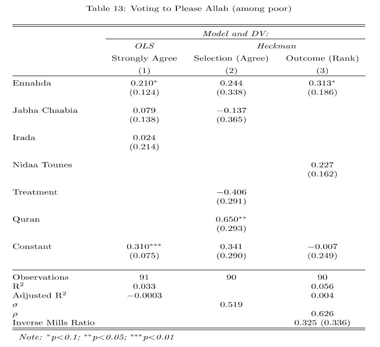

11.3 Heckman Example Using Survey Data
This example is from “Poverty and Divine Rewards: The Electoral Advantage of Islamist Political Parties” published in the American Journal of Political Science in 2019.
Abstract Political life in many Muslim-majority countries has been marked by the electoral dominance of Islamist parties. Recent attempts to explain why have highlighted their material and organizational factors, such as the provision of social services. In this article, we revive an older literature that emphasizes the appeal of these parties’ religious nature to voters experiencing economic hardship. Individuals suffering economic strain may vote for Islamists because they believe this to be an intrinsically virtuous act that will be met with divine rewards in the afterlife. We explore this hypothesis through a series of laboratory experiments in Tunisia. Individuals assigned to treatment conditions instilling feelings of economic strain exhibit greater support for Islamist parties, and this support is causally mediated by an expectation of divine compensation in the hereafter. The evidence suggests that the religious nature of Islamist parties may thus be an important factor in their electoral success.
We are going to replicate a small part of their analysis of an experiment:
- Experiment 2 induced economic strain by exposing participants (n = 201) to four hypothetical financial scenarios
- Half were randomly assigned to a “hard” condition, in which the four scenarios involved financial costs that were relatively high, whereas
- Half were assigned to an “easy” condition that involved substantially lower costs.
- One of the secondary dependent variables was: In Experiment 2, why they chose to vote for the party they did, giving them six options, including “Allah will be
more pleased if I vote for this party than other parties.”
- For each answer option, we asked respondents for their level of agreement with the statement and
- subsequently asked them to rank each statement they agreed with in importance.
Let’s load the data and explore the variables.
exp2 <- read.csv("https://github.com/ktmccabe/teachingdata/raw/main/exp2.csv")The authors are looking to verify that pleasing Allah had something to do with Ennahda vote choice, particularly among poor voters. Let’s look at the variable votenahda, which is a 0 or 1 outcome.
- 1 if plan to vote for Ennahda if elections held tomorrow, 0 if not
table(exp2$votenahda)
0 1
335 66 Whether a voter is poor is determined by if they fall below 7 on the variable inc. Let’s subset our data to only examine poor voters.
subdata <- subset(exp2, inc < 7)They want to understand if pleasing Allah was a top reason for voting for the party. This information is only available for those that agreed or strongly agreed with the statement, “Allah will be more pleased if I vote for this party than other parties.”
This information is in the variable voteAllah2
voteAllah2: 1=strongly agree or agree, 0=otherwise
table(exp2$voteAllah2)
0 1
118 169 The ranking information is available in the variable, voteAllahrank3:
voteAllahrank3: 1 if voteAllahrank \(>\) 4 (top two reasons); NA if voteAllahrank = 0; 0 otherwise.
table(exp2$voteAllahrank3)
0 1
104 64 Let’s identify the sample selection issue.
voteAllahrank3is only observed for those who strongly agreed or agreed with the statement
table(RankedTopTwo=exp2$voteAllahrank3, Agreed=exp2$voteAllah2) Agreed
RankedTopTwo 0 1
0 0 104
1 0 64What makes this a candidate for a Heckman sample selection model?
Try on your own, then expand.
- We are interested in estimating whether Ennahda voters are more likely than others to rank pleasing Allah among the top two reasons. Our desired outcome is \(Y_i =\)
voteAllahrank3- \(Y_i\) only observed for those who met some criteria set by another random variable (in this case
voteAllah2= 1). - However, we still have information on the independent variables for all respondents, regardless of whether they are a 0 or 1 on
voteAllah2
- \(Y_i\) only observed for those who met some criteria set by another random variable (in this case
Estimate the two-step process, following the authors in terms of what variables to include in each stage according to columns 2 and 3 in the table.

- Prior to fitting the model, subset the data to include only respondents who voted for
votenahda,votenidaa,votejabha,voteirada, indicated by respondents being coded as a 1 on these variables. These correspond to the party variables in columns 2 and 3.- other relevant variables are
treatandquran
- other relevant variables are
Try on your own, then expand for the solution.
As the authors note, “The ranking is a two-step process, as respondents only get to rank factors that they agree with. To model their rankings, we therefore employ a Heckman selection model, analyzing first who agreed that pleasing Allah is important in their vote choice, and then analyzing second who ranked pleasing Allah as one of their top two factors.”
subdata2 <- subset(subdata, votenahda==1 |
votenidaa==1 | votejabha==1 |
voteirada==1)
two <- selection(selection = voteAllah2~votenahda+votejabha+treat+quran,
outcome = voteAllahrank3~votenahda+votenidaa,
data=subdata2,
method="2step")
summary(two)--------------------------------------------
Tobit 2 model (sample selection model)
2-step Heckman / heckit estimation
90 observations (31 censored and 59 observed)
11 free parameters (df = 80)
Probit selection equation:
Estimate Std. Error t value Pr(>|t|)
(Intercept) 0.3418 0.2897 1.180 0.2415
votenahda 0.2442 0.3383 0.722 0.4725
votejabha -0.1369 0.3646 -0.375 0.7083
treat -0.4057 0.2906 -1.396 0.1665
quran 0.6495 0.2927 2.219 0.0293 *
Outcome equation:
Estimate Std. Error t value Pr(>|t|)
(Intercept) -0.007066 0.248585 -0.028 0.9774
votenahda 0.312768 0.185545 1.686 0.0958 .
votenidaa 0.226522 0.161635 1.401 0.1650
Multiple R-Squared:0.0558, Adjusted R-Squared:0.0043
Error terms:
Estimate Std. Error t value Pr(>|t|)
invMillsRatio 0.3248 0.3356 0.968 0.336
sigma 0.5187 NA NA NA
rho 0.6263 NA NA NA
--------------------------------------------How should we interpret the results in light of the researchers’ hypothesis that Ennahda voters would be more likely to rank pleasing Allah as a top reason?
Try on your own, then expand for the solution.
As the authors note describing the outcome equation, “results suggest that poor Ennahda voters were about 31% more likely to rank pleasing Allah among their top two factors (p = .096; see the SI, p. 22) than poor supporters of secular parties.”
We have to be careful here, that this is from the outcome equation and does not represent the marginal effect based on both selection and outcome processes.